Change your IP in one click: OpenVPN, WireGuard, Shadowsocks and proxy in one dark, fast program for Windows.
⬇ DOWNLOAD GHOSTVPN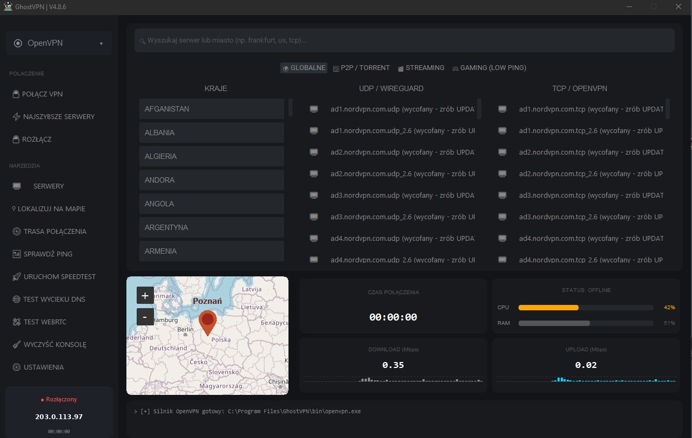
GhostVPN hides your real IP address.
It connects you to a VPN server or proxy of your choice, and websites see the server's IP instead of yours.
You keep your own VPN account (NordVPN, Surfshark, ProtonVPN, Mullvad and many more) or use free servers. GhostVPN replaces all their separate apps with one window: pick a country, click CONNECT VPN, done.
You need: Windows 10/11 · Python 3.10+ (tick Add Python to PATH) · OpenVPN · administrator rights. Missing Python libraries install themselves on the first start.
| Feature | What it does | |
|---|---|---|
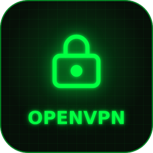 | OpenVPN | Connects with .ovpn profiles from 19 VPN providers, without their apps. UDP or TCP, automatic UDP → TCP fallback. |
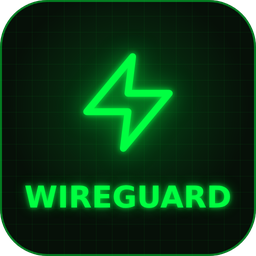 | WireGuard | Fast modern tunnel from your .conf file. The program checks the handshake, so you know the tunnel really works. |
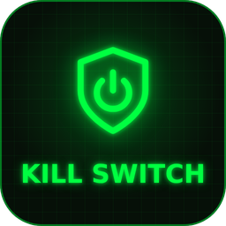 | Kill Switch | Uses Windows Firewall to block all traffic outside the VPN. If the tunnel drops, your real IP never leaks. |
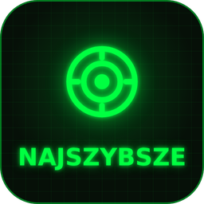 | Fastest servers | Live ping for every server and one-click Smart Connect to the fastest one. Tabs for P2P, streaming and gaming. |
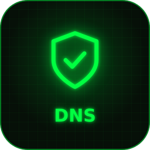 | Secure DNS | Sets Cloudflare, Quad9, AdGuard or OpenDNS for IPv4 and IPv6, and flushes the DNS cache. |
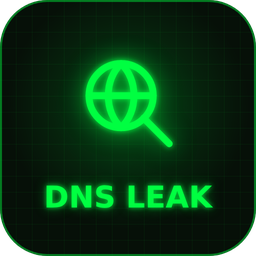 | Leak tests | DNS leak test and WebRTC test: check that nothing gives away your real IP. |
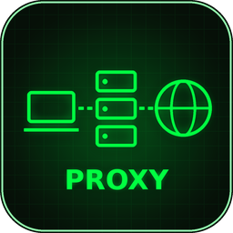 | Proxy | SOCKS5 and HTTP proxy with login, a local bridge, and Firefox launched through the proxy. 19 premium proxy providers. |
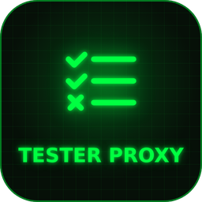 | Proxy tester | Multi-threaded tester for proxy lists (.txt) with live results: alive or dead. |
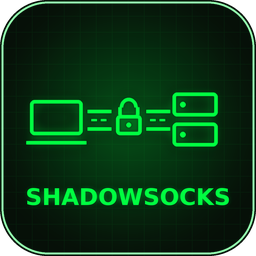 | Shadowsocks | Encrypted tunnel that is hard to block, with ss:// link support and a guide for your own server. |
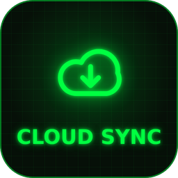 | Cloud Sync | Downloads fresh server lists of NordVPN, PrivadoVPN, PIA, Mullvad, AirVPN and others in one click. |
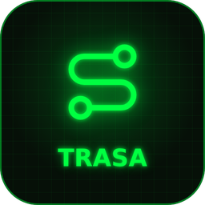 | Route map | Shows on the map which countries and nodes your traffic passes through. |
| Speedtest and data counter | Live download/upload charts, speedtest and how much data the session used. | |
| Skins and tray | 20 colour themes, Polish and English, works from the tray next to the clock. | |
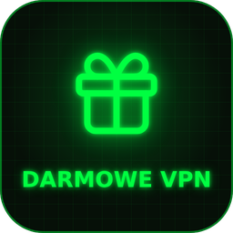 | Free VPN | Ready entries for VPN Gate and IPSpeed public servers. |
GhostVPN does not sell VPN: you use your own account, or the free servers.
| Paid VPN | Free VPN | Own WireGuard | Paid proxy |
|---|---|---|---|
| 19 providers | VPN Gate · IPSpeed | your .conf file | 19 providers |
| Provider | How servers get into GhostVPN |
|---|---|
| VPN Gate | automatic, one click: free public servers |
| IPSpeed | automatic, one click: free public servers |
Where: SETTINGS → ADVANCED → DARMOWE VPN (free VPN) → UPDATE. Every downloaded profile is checked before it is saved.
| Provider | How servers get into GhostVPN |
|---|---|
| NordVPN (shown as OpenVPN in the list) | automatic, one click (5000+ servers) |
| PrivadoVPN | automatic, one click |
| PIA VPN | automatic, one click |
| IPVanish | automatic, one click |
| PureVPN | automatic, one click |
| VyprVPN | automatic, one click |
| IVPN | automatic, one click |
| FastVPN (Namecheap) | automatic, one click |
| OVPN.com | automatic, one click |
| Mullvad VPN | automatic with your account number (OpenVPN + WireGuard) |
| AirVPN | automatic with your Direct Link |
| CyberGhost | files from the provider's website (WEBSITE + FOLDER buttons) |
| PrivateVPN | files from the provider's website (WEBSITE + FOLDER buttons) |
| Perfect Privacy | files from the provider's website (WEBSITE + FOLDER buttons) |
| HMA VPN | files from the provider's website (WEBSITE + FOLDER buttons) |
| TorGuard | files from the provider's website (WEBSITE + FOLDER buttons) |
| ProtonVPN | .ovpn files from the provider's website |
| ExpressVPN | .ovpn files from the provider's website |
| Surfshark | .ovpn files from the provider's website |
WireGuard is not a provider, it is a fast VPN protocol. If your provider (paid or free plan) gives you a WireGuard .conf file, put it in GhostVPN: choose WireGuard in the list → SETTINGS → BROWSE CONFIG. Mullvad users get WireGuard files automatically.
Proxy Store · Bright Data · Oxylabs · Decodo · NetNut · SOAX · IPRoyal · Rayobyte · Infatica · ProxyEmpire · ProxyRack · Shifter · NodeMaven · Webshare · DataImpulse · Proxy-Seller · Geonix · Proxy6 · Proxy-Cheap
You save the provider's proxy list as a .txt file and load it in GhostVPN (login and password supported).
Advanced.name · Spys.one · FreeProxy.world · Free-Proxy.cz · Geonix · FloppyData · Proxy5.net · RoundProxies · ProxyScrape · Free-Proxy-List.net · IPRoyal (free) · NodeMaven
| Server | What it is |
|---|---|
| Squid | your own HTTP proxy on a VPS, only for you |
| Shadowsocks | your own encrypted tunnel on a VPS, hard to block |
GhostVPN creates the file SERWER Squid + Shadowsocks.txt with copy-paste commands to set them up.
| OpenVPN | WireGuard | Proxy | |
|---|---|---|---|
| Encryption | AES-256 | ChaCha20 | only the site's HTTPS |
| Protects the whole system | yes | yes | selected apps only |
| Speed | good | very high | depends on the server |
| Connecting | a few seconds | a split second | instant |
| Kill Switch | yes | yes | no |
| Best for | everyday use, blocked networks | games, streaming | quick IP change in the browser |
Your VPN login is encrypted by Windows (DPAPI) and stays on your computer. GhostVPN has no account, no ads and no tracking.
GhostVPN belongs solely to its author, MRGREGOR85. Private home use only.
You may download it from this page and use it on your own computer. You may not share it with other people, re-upload it anywhere, sell it, use it commercially or modify it. Everyone downloads their own copy from this official page.
Full text in the LICENSE file. You can also read it in the program: SETTINGS → LICENSE.
The pirate behind GhostVPN. I build programs for people who want to stay invisible on the internet.
If GhostVPN helps you, please give it a star ⭐